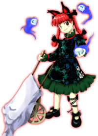

- Welcome to Touhou Wiki!
- Please register to edit. For assistance, check in with our Discord server or IRC channel.
Rin Kaenbyou
- "Rin" redirects here. For the character cut from Embodiment of Scarlet Devil, see Rin Satsuki.
Rin Kaenbyou kaembʲoː ɽiɴ (♫) | |
|---|---|
|
Rin Kaenbyou in Subterranean Animism Hell's Traffic AccidentMore Character Titles | |
| Nickname |
Orin (お |
| Species | |
| Abilities |
Carrying away corpses, controlling and communicating with spirits |
| Occupation |
Controller of spirits in the remnants of the Hell of Blazing Fires |
| Location | |
Music Themes | |
| |
Appearances | |
| Official Games | |
| |
| Print Works | |
| |
Rin Kaenbyou (火焔猫 燐 Kaenbyou Rin) is one of Satori Komeiji's pets. Her job is to carry corpses to the former Hell of Blazing Fires to regulate its heat.
General Information[edit]
Personality[edit]
Rin has an energetic, positive personality; she prefers to be called Orin, since she doesn't like long names. She claims that while it is more fun to take on a pure cat form, she can't talk to humans that way - nor does it seem she can do her job, carting corpses away, which she seems to take great pleasure in. She appears to have challenged the main character in Subterranean Animism partly because she wanted their corpse, but also partly to test their strength to see if they would be able to stop Utsuho Reiuji for her, and appears to bear no ill will towards them for her defeat. Symposium of Post-mysticism states that she has no interest in killing humans herself to gain their corpses; she prefers to hunt for those on the verge of death, supposedly because it makes for more interesting conversation. If a corpse is properly buried, she'll lose interest.
Ability[edit]
- Carrying away corpses
Rin's official profile lists her ability as "carrying away corpses". As an ability that comes from her species, it is as it sounds like. The carried-away corpses burn as fuel for the Hell of Blazing Fires, although it is a mystery why the abandoned Hell of Blazing Fires needs to be fuelled in the first place. Incidentally, the spirits of the corpses carried away by kasha become onryou and become unable to achieve nirvana. She can also shift between cat form and human form at will. Hieda no Akyu states in Symposium of Post-mysticism that her corpse-carrying ability is not really a youkai-like one, but she is very good at it, using various tricks.
- Controlling and communicating with spirits
She is able to communicate with corpses and control all kinds of spirits; she appears to enjoy the conversations of the freshly dead, because they may not realize they're dead. In combat, she can briefly reanimate corpses so that they "act" like zombies.
However, prior to the events of Subterranean Animism, she displays the ability to drive vengeful spirits above-ground, which is what causes the heroines to dive underground in the first place. Symposium of Post-mysticism does not mention this.
Occupation[edit]
Rin is a kasha living in the Palace of the Earth Spirits; her master is Satori Komeiji. Essentially, she lives day-to-day by stealing corpses from funerals to cart them to the former Hell of Blazing Fires. She will not kill humans herself, though she (quite efficiently) pursues humans that are close to death, hiding stolen corpses in her wheelbarrow using a straw mat, or just generally collecting corpses she happens to run across. Humans do not usually think that she would be carting corpses out in the open like she does, so she has a degree of freedom even in places with lots of people. In addition to maintaining the energy influx for the power source, she also controls vengeful spirits, at least in the vicinity.
Possessions[edit]
Rin's only possession is her wheelbarrow, often referred to as "Orin's Cat Cart". It has no special properties, but Symposium of Post-mysticism describes it as the pushcart that has likely carried the most corpses in all of history.
Backstory[edit]
When the Underground separated from Hell, becoming known as Former Hell, both Rin and Utsuho Reiuji became pets to Satori Komeiji. Her job is to cart corpses into the fires generating heat for the Underground. One day, she noticed that the flames were extremely strong - much stronger than usual - and, worried, forced evil spirits above-ground to try and signal youkai to come help. She did not tell Satori about the possibly gigantic power Utsuho had obtained, however, and decides to figure things out for herself.
Background Information[edit]
Origin[edit]
Rin's concept is taken from the kasha, a type of youkai that appears during stormy weather to bring the bodies of sinners to Hell. They are said to be cats that have turned into youkai through various circumstances such as long life. Sometimes temples near places where kasha are said to live will hold two funerals for the dead: in the first, the coffin is filled with rocks so that the kasha won't disrupt the funeral to carry off the deceased. Rin is said to steal corpses from funerals while no one is looking.
Name[edit]
Her full name is Rin Kaenbyou (火焔猫 燐 Kaenbyou Rin). The characters for Kaenbyou (火焔猫) literally mean "blazing cat". The one for Rin (燐) means "phosphorus". Rin is shown pushing a wheelbarrow, which is also known in Japanese as a Nekoguruma (猫車), which means "cat cart".
Design[edit]
Rin has black cat ears and dark red eyes, with fiery red hair styled into twin braids and adorned by black ribbons at the top and bottom of the braids. She wears a black decorated dress with green frills. She's pushing a wheelbarrow in one hand and holding a vengeful spirit in the other. Surrounding her are several more of these spirits.
Rin's Appearances[edit]
Games[edit]
- Subterranean Animism
Rin's story in Subterranean Animism is similar no matter what player character you pick. she appears as the stage 4, 5 ans 6 midboss, while appearing as the boss for stage 5. When a human arrives underground instead of a youkai like she was expecting, she challenges the heroine, wanting to take her corpse. However, she is defeated, and upon witnessing the heroine's strength, asks her to go deeper into the Hell of Blazing Fires in order to stop Utsuho Reiuji. During her boss battle, she is seen summoning Zombie Fairies and Vengeful spirits.
Spin-offs[edit]
- Double Spoiler
In Double Spoiler, Rin appeared as a stage 8 boss and uses spell cards that involves Zombie Fairies when Aya Shameimaru and Hatate Himekaidou take photos of her and her danmaku. When taking a picture of Rin in her cat form, the player is awarded the "Cat bonus", which gives a bonus of 666 points, the mark of the beast. This is somewhat fitting considering that Rin is located in Hell.
- Hopeless Masquerade
Rin appears as a background cameo in Hopeless Masquerade on the Palace of Earth Spirits and Youkai Tanuki Forest stage. She is seen doing a rally cheer.
Literature[edit]
In her article in the Bunbunmaru Newspaper, Rin was brought in to the Myouren Temple by Byakuren Hijiri and the others to talk to the zombie guarding part of the cemetery, Yoshika Miyako. After explaining to them that the reanimated corpse doesn't want to hurt anyone, she takes a few other corpses as payment and returns to the Underground with them.
In addition, Byakuren mentions that Rin once came up from the Underworld because she wanted to join the temple. The monk turned her away as Rin really only wanted access to the vast amount of graves in the graveyard.
- Wild and Horned Hermit
| Attention: This section is a stub and it needs expanding with more information related to the section's topic. If you can add to it in any way, please do so. |
Relationships[edit]
Satori is Rin and Utsuho's master. Apparently she keeps them as pets, but they have their own jobs to do, and are not seen together very often in the games or in books.
Utsuho is described as Rin's old friend from when the yama split Hell out of the Underground. She is on good enough terms with her to not tell Satori about the trouble she causes in Subterranean Animism.
Minor Relationships[edit]
In Symposium of Post-mysticism, Rin is brought in to communicate with Yoshika, as her ability is being able to talk to corpses.
Gallery[edit]
Rin's sigil from the Grimoire of Marisa
Spell Cards[edit]
| Name | Translated | Comments | Games | Stage | ||
|---|---|---|---|---|---|---|
| Total: 14 | ||||||
| 猫符「キャッツウォーク」 | Cat Sign "Cat's Walk" | SA GoM |
St. 5: E/N ---- | |||
| 猫符「怨霊猫乱歩」 | Cat Sign "Vengeful Cat Spirit's Erratic Step" | SA | St. 5: H/L | |||
| 呪精「ゾンビフェアリー」 | Cursed Sprite "Zombie Fairy" | SA GoM |
St. 5: E/N ---- | |||
| 呪精「怨霊憑依妖精」 | Cursed Sprite "Fairies Possessed by Vengeful Spirits" | SA | St. 5: H/L | |||
| 恨霊「スプリーンイーター」 | Malicious Spirit "Spleen Eater" | SA GoM |
St. 5: E/N ---- | |||
| 屍霊「食人怨霊」 | Corpse Spirit "Vengeful Cannibal Spirit" | SA | St. 5: H/L | |||
| 贖罪「旧地獄の針山」 | Atonement "Needle Mountain of a Former Hell" | SA GoM |
St. 5: E/N ---- | |||
| 贖罪「昔時の針と痛がる怨霊」 | Atonement "The Needles of Yore and the Vengeful Spirits in Pain" | SA | St. 5: H/L | |||
| 「死灰復燃」 | "Rekindling of Dead Ashes" | SA | St. 5: E/N | |||
| 「小悪霊復活せし」 | "Small Demon's Revival" | SA | St. 5: H/L | |||
| 妖怪「火焔の車輪」 | Youkai "Blazing Wheel" | SA | St. 6: E/N/H/L | |||
| 死符「ゴーストタウン」 | Death Sign "Ghost Town" | DS | St. 8 | |||
| 「死体繁華街」 | "Corpse Shopping District" | DS | St. 8 | |||
| 酔歩「キャットランダムウォーク」 | Drunkard's Walk "Cat Random Walk" | DS | St. 8 | |||
Additional Information[edit]
- Rin may be the most persistent Touhou Project bosses, appearing as a midboss in three stages, and as a stage boss all in one game.
- Rin is the only Windows Stage 6 midboss that, when defeated, doesn't directly lead to the final boss. A few stage enemies of vengeful spirits leads to Utsuho instead, similar to Mountain of Faith's Stage 6, except than in Mountain of Faith there isn't a midboss.
- Some of her attacks resemble attacks used by the second boss of Samidare from Project Blank, Anareta.
- In ancient Aztec culture, each household had a small red dog called the Techihi who was said to guide lost souls to the underworld, and would often be sacrificed along with its master. Strangely, Rin has both red hair and performs a similar duty.
- Rin's dancing pose in Hopeless Masquerade may be a reference to how she dances in Twilight Frontier's Komeiji Satori no Jousou Kyouiku, where Rin, or Koishi Komeiji, will do a similar dance if she manages to get to a gift-box first.
Fandom[edit]
Official Profiles[edit]
|  | ○５面ボス 地獄の輪禍 火焔猫 燐（かえんびょう りん）（通称：お燐） 種族：火車 本当の名前は火焔猫 燐（かえんびょう りん） 火の中に棲む猫で、さとりのペットである。口が上手く、死体や霊と自由に会話が出来る為、灼熱地獄跡で怨霊の管理を任されている。 彼女の古い友人に霊烏路空が居る。彼女とはさとりに飼われ始めた頃、則ち地底が地獄でなくなった頃以来の親友である。 ある日、彼女は灼熱地獄跡に異変を感じ取った。 火力の管理は空の管轄である。お燐はすぐに空の元を訪ねて驚いた。 それ以来、空は増長し始め、力を見せつけるようになっていった。 そんなこと出来る筈もない。さとり様が許す筈もない。 それは怨霊を地上に送り込む事。それにより地上の妖怪達に異変を知らしめる事が出来れば、何かが変わる筈だと。 その人間は思いの外強く、妖怪退治の専門家といううってつけの人間だったのである。 最初からさとり様に相談すれば良かったのだが、お燐は何となく空の異変を隠した方がいいと思っていた。もし空の異変に気付けば、さとり様は容赦なく空を始末するだろう、そう考えていた。 |
Stage 5 Boss Hell's Traffic Accident Rin Kaenbyou (nickname: Orin) Species: kasha Her real name is Rin Kaenbyou. A cat that lives among the flames, and Satori's pet. Since she's well-spoken and can converse freely with corpses and spirits, she was left in charge of controlling the spirits in what was once the Hell of Blazing Fires. She has an old friend named Reiuji Utsuho. They've been close friends since before the time Satori began taking care of her, that is, the time when the underground separated from Hell.
Regulating the flames was Utsuho's job. Orin went to visit Utsuho and was surprised by what she found. Since then, Utsuho began to grow stronger, and to seek out power. There's no way she should have been able to do that. There's no way Satori would allow it.
That human was unexpectedly strong, and what is more, she specialized in youkai extermination.
|
Official Sources[edit]
- 2008/08/16 - Subterranean Animism - Settings.txt (official profile)
- 2009/07/28 - The Grimoire of Marisa - Orin's Spell Cards
- 2010/03/14 - Double Spoiler - Stage 8 Spell Cards
- 2010/08/26 - Oriental Sacred Place - Chapter 10 (cameo)
- 2012/04/27 - Symposium of Post-mysticism
References[edit]